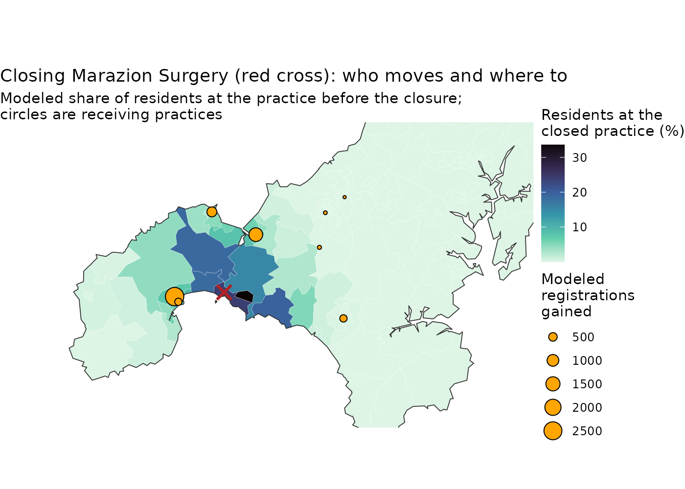

If Marazion Surgery in west Cornwall closed, where would its
registered residents go? This guide answers that question with the
allocation model fitted in Where do
residents register?. You will hold the fitted values, close one
practice, and compare the modeled practice lists before and after: which
practices gain, how many residents go outside mainland Cornwall, and
which areas move. The data are the bundled small areas, practices,
registrations and travel times described in The Cornwall GP example data. The
spax() interface and the allocation model are experimental
and may change in later versions.
The guide uses spax, with sf, dplyr and ggplot2 for tables and maps.
The idea
A scenario changes the inputs and runs the model again at the same parameter values. Nothing is refitted. In the model, each practice attracts the residents of a small area in proportion to its supply, here its GP full-time equivalents (FTE), discounted by travel time with the travel scale σ, in minutes. The outside option, registering with a practice outside mainland Cornwall, competes with all practices through the outside weight v0. A practice with zero GP FTE attracts no one, so closing it shares its residents among the other practices and the outside option, at the same σ and v0.
Fit the model once
The recipe builds demand by small area (registered residents), supply
by practice (GP FTE excluding GPs in training), the travel times and the
observed registrations, and spax() fits the model. Demand
counts every resident registered with any practice in England, so each
area’s count outside mainland Cornwall is known, and
outside = "known" declares it. This is the fit of When
outside counts are known, which explains its output.
areas <- cornwall_lsoa |>
filter(!scilly) |>
st_drop_geometry()
gp <- cornwall_gp |>
filter(!scilly) |>
st_drop_geometry()
travel <- cornwall_travel[areas$lsoa, gp$practice]
demand <- setNames(areas$registered, areas$lsoa)
supply <- setNames(gp$gp_fte_extg, gp$practice)
d <- prep_data(demand, supply, travel, metadata = list(
demand_units = "registered residents", demand_period = "July 2026",
supply_units = "GP FTE excluding GPs in training", supply_period = "June 2026",
travel_units = "minutes"))
flows <- obs_flows(cornwall_flows, origin = "lsoa", facility = "practice", count = "patients")
# The same registrations, with each area's outside count known
flows_known <- obs_flows(
cornwall_flows,
origin = "lsoa",
facility = "practice",
count = "patients",
outside = "known"
)
clm_known <- spax(d, spec_clm(), observed = flows_known)
coef(clm_known) sigma v0
4.61941762 0.04864483 The travel scale σ is about 4.62 minutes and the outside weight v0 about 0.049. These are the values the scenarios below hold.
Hold the fitted values
A specification with a number in every slot has nothing to fit. Here
the decay holds the fitted σ and outside holds the fitted
v0, and spax() with no observations evaluates the model at
those values.
spec_at <- spec_clm(
decay = decay_gaussian(sigma = coef(clm_known)[["sigma"]]),
outside = coef(clm_known)[["v0"]]
)
spec_at<spax spec> conditional logit with an outside option
decay gaussian (sigma = travel scale): 4.619418
attraction (kappa * supply)^beta: kappa = 1, beta = 1
outside v0: 0.04864483
base <- spax(d, spec_at)Where spec_clm() alone would say fit, the
print shows numbers, so there is nothing left to estimate. At the fitted
values the model gives each practice the same modeled list as the
fit:
all.equal(
as.data.frame(base, type = "facilities")$utilization,
as.data.frame(clm_known, type = "facilities")$utilization
)[1] TRUEClose the practice
replace() sets the GP FTE of Marazion Surgery (practice
code L82047) to zero, and prep_data() prepares the changed
inputs. The practice stays in the data with no attraction, and
spax() evaluates the same specification.
The "facilities" table of each result holds each
practice’s modeled list (utilization). The table below sets
the two side by side and lists the largest changes.
before <- as.data.frame(base, type = "facilities")
after <- as.data.frame(closed, type = "facilities")
# Practice names, from capitals to title case
practice_name <- function(id) {
tools::toTitleCase(tolower(gp$name[match(id, gp$practice)]))
}
changes <- data.frame(
practice = before$facility_id,
name = practice_name(before$facility_id),
before = round(before$utilization),
after = round(after$utilization)
) |>
mutate(change = after - before)
changes |>
arrange(desc(abs(change))) |>
head(7) practice name before after change
1 L82047 Marazion Surgery 5724 0 -5724
2 L82036 Bodriggy Health Centre 16008 17416 1408
3 L82038 Atlantic Medical Group 14468 15665 1197
4 Y01050 Rosmellyn Surgery 11089 12007 918
5 Y01922 Stennack Surgery 9708 10402 694
6 L82070 Sunnyside Surgery 6034 6534 500
7 L82018 Helston Medical Centre 18316 18668 352Marazion Surgery’s 5,724 modeled registrations move mostly to nearby practices in Hayle and Penzance: Bodriggy Health Centre (+1,408), Atlantic Medical Group (+1,197) and Rosmellyn Surgery (+918). Practices farther away, such as Helston Medical Centre, gain less.
Registrations outside mainland Cornwall
The "origins" table gives each small area’s outside
share. Multiplying each area’s outside share by its demand and summing
over areas gives the number of residents the model sends outside
mainland Cornwall.
outside_count <- function(result) {
by_area <- as.data.frame(result, type = "origins")
sum(by_area$demand * by_area$outside_share)
}
round(c(before = outside_count(base), after = outside_count(closed)))before after
5497 5523 Only 26 of the 5,724 residents go outside mainland Cornwall, because Marazion Surgery has near neighbors.
Who moves, and where to
predict() gives each area’s modeled share of residents
at each practice ("allocation"). The map shows each area’s
share at Marazion Surgery before the closure, and the practices that
gain more than 10 modeled registrations.
# Each area's modeled share of residents at the closed practice
shares <- predict(base, travel, outputs = "allocation")
moved <- data.frame(
lsoa = shares$origin_ids,
share = shares$outputs$allocation[, "L82047"]
)
moved_map <- cornwall_lsoa |>
select(lsoa) |>
inner_join(moved, by = "lsoa")
# Practices that gain more than 10 modeled registrations, with locations
gained <- cornwall_gp |>
select(practice) |>
inner_join(
changes |>
filter(change > 10) |>
select(practice, change),
by = "practice"
)
# Practices on one site share a point: add their gains
site <- st_coordinates(gained)
gained <- gained |>
mutate(x = site[, 1], y = site[, 2]) |>
group_by(x, y) |>
summarise(change = sum(change), .groups = "drop")
# Map window over west Cornwall, in longitude and latitude
west <- st_bbox(
c(xmin = -5.79, ymin = 50.00, xmax = -5.00, ymax = 50.29),
crs = st_crs(cornwall_lsoa)
)
ggplot() +
geom_sf(
data = moved_map,
aes(fill = 100 * share),
color = "white",
linewidth = 0.05
) +
geom_sf(data = st_union(moved_map), fill = NA, color = "grey20", linewidth = 0.3) +
geom_sf(data = gained, aes(size = change), shape = 21, fill = "orange") +
geom_sf(
data = filter(cornwall_gp, practice == "L82047"),
shape = 4,
size = 4,
stroke = 1.5,
color = "firebrick"
) +
scale_fill_viridis_c(
option = "mako",
direction = -1,
name = "Residents at the\nclosed practice (%)"
) +
scale_size_area(name = "Modeled\nregistrations\ngained") +
coord_sf(xlim = west[c("xmin", "xmax")], ylim = west[c("ymin", "ymax")]) +
labs(
title = "Closing Marazion Surgery (red cross): who moves and where to",
subtitle = paste(
"Modeled share of residents at the practice before the closure;",
"circles are receiving practices",
sep = "\n"
)
) +
theme_void()
The residents who move live in the areas around Marazion, and the model sends them mostly to the practices a short drive away. Atlantic Medical Group, Rosmellyn Surgery and Sunnyside Surgery share one site in Penzance, so the map shows one circle for their combined gain of 2,615. The changes follow from the model at fixed values of σ and v0, in which travel time and GP FTE are all that matter. They are a model-based comparison, not an estimate of what a real closure would cause. Reading results says more.
A practice without near neighbors
Closing a practice with no near neighbor sends far more residents to the outside option. Launceston Medical Centre (L82030), on the Devon border, is an example. The code closes it instead of Marazion Surgery and counts the residents of its modeled list who go outside.
closed_launceston <- spax(
prep_data(demand, replace(supply, "L82030", 0), travel),
spec_at
)
# Residents of its modeled list who go outside, and the list itself
round(c(
outside = outside_count(closed_launceston) - outside_count(base),
list = before$utilization[before$facility_id == "L82030"]
))outside list
11985 19733 About 61% of Launceston Medical Centre’s modeled list goes to the outside option. With σ about 4.6 minutes, a practice 15 minutes away keeps only 0.5% of the pull it would have next door. For 71% of Launceston’s modeled list, the nearest other mainland practice is at least that far, so the outside option, the same in every area, wins there.
A smaller change: 20% more GP FTE
The same route evaluates any change in supply. Here Marazion Surgery gains 20% more GP FTE instead of closing.
larger <- spax(
prep_data(demand, replace(supply, "L82047", 1.2 * supply[["L82047"]]), travel),
spec_at
)
changes_larger <- data.frame(
practice = before$facility_id,
name = practice_name(before$facility_id),
before = round(before$utilization),
after = round(as.data.frame(larger, type = "facilities")$utilization)
) |>
mutate(change = after - before)
changes_larger |>
arrange(desc(abs(change))) |>
head(5) practice name before after change
1 L82047 Marazion Surgery 5724 6680 956
2 L82036 Bodriggy Health Centre 16008 15778 -230
3 L82038 Atlantic Medical Group 14468 14268 -200
4 Y01050 Rosmellyn Surgery 11089 10936 -153
5 Y01922 Stennack Surgery 9708 9588 -120Marazion Surgery’s modeled list grows by 956, or 17%, taken from the same neighbors that would gain from its closure. The list grows by less than 20%, because in the areas where the practice already draws most residents a stronger pull has few residents left to win.
Next
- How sure are the estimates? gives bootstrap intervals for a paired scenario, 20% more supply at one facility, on generated data.
- Reading results says what a fixed-value scenario can and cannot tell you.
- Where do residents register? fits the model used here and checks what the registrations identify.